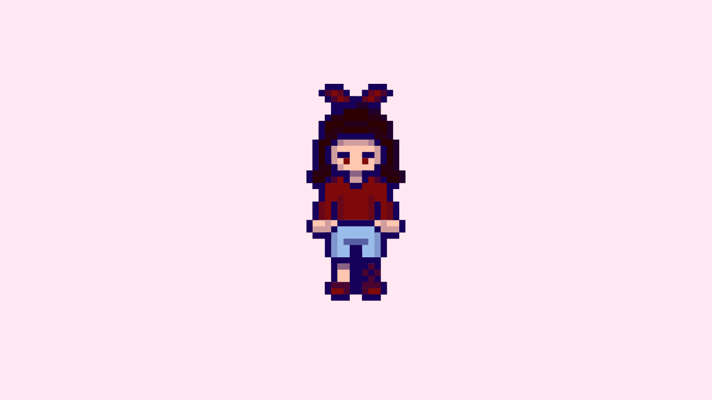

Greetings from the creator of this webpage, I hope you feel welcomed here.
Here are some cookies and tea for you while you get to know me ୧ ‧₊˚ ☕🍪 ⋅ ☆

I am Aakriti Dwivedi, currently in my third year, pursuing Computer Science at SFU. I am a very creative person so at first I was't sure if I should really pursue Computer Science but during my first lecture to Introduction to Programming I, I realised I am exactly where I was meant to be. I realised that Computer Science is a place where I can be extremely creative, think differently and still solve the problems or create something entirely different like this website and I fell in love with it.
I am a person of many interests and hobbies but if I have to list them then I would say I am very much so aligned with creative arts like singing, dancing, sketching, drawing, painting, sculpting and the list goes on..
I am very fond of certain things which are almost around me all the time, which my friends call Aakriti core or Aakriti coded and that is the story behind the origin of Aakriti core .𖥔 ݁ ˖๋ ࣭ ⭑
I am also very fond of taking pictures of things I find beautiful, and I have been told I have "an eye for aesthetics" from my friends and supervisor.
I think the pictures I take describes Aakriticore perfectly.